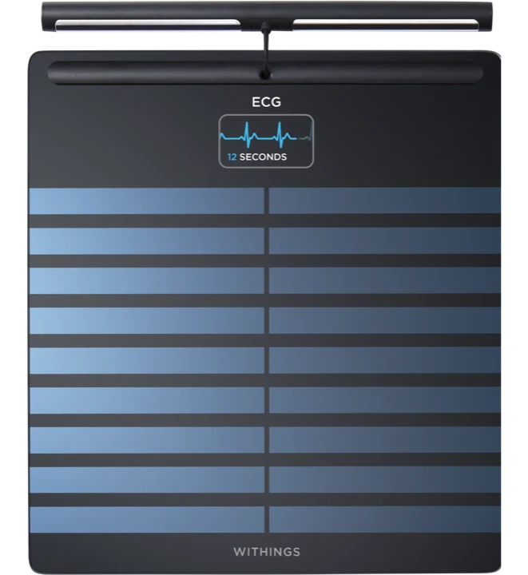
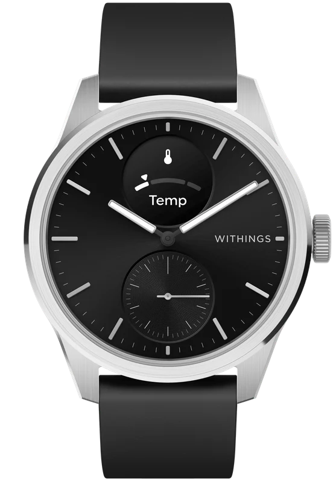

Personal field notes from years of intermittent fasting, lab-report self-study, and the slow business of learning how my own metabolism actually behaves.
For years I've been quietly running my own nutrition and metabolism experiment. Daily intermittent fasting, lots of questions about food, and a habit of reading every line of every blood panel that comes back.
Somewhere along the way I discovered I'm a lean-mass hyper-responder — the metabolic phenotype where being lean and low-carb sends LDL up while metabolic markers stay clean. Which made me much more interested in the system, not just the number.
This page is where I collect those notes — the protocols I actually follow, the self-studies I've done from my own lab reports, and the beliefs the work has nudged me toward.
It's a field journal, not a how-to. Everyone's metabolism is its own weather system. Mine is what I have data on.
The plain version of the routine — eating windows, training, the boring things that compound.
A few of the threads I've followed through my own numbers. Each one earned a deeper read than the doctor's three-line summary.
Discovered through repeated panels: lean, low-carb, high LDL, clean triglycerides and HDL. The classic LMHR pattern. Tracking how it shifts over years.
write-up comingFollowing the gap between fasting glucose and HbA1c, and what changes the IF window seems to make to both.
write-up comingLong-running lean-mass vs fat-mass tracking — what holds, what shifts, what training and food adjustments actually move.
write-up comingNew self-study threads — micronutrients, sleep tracking, HRV — will be added as they earn enough data to write up.
to be addedNot advice — just the shorthand I've ended up with after years of self-tracking. They may not survive the next decade of evidence, and that's the point.

Withings Body Scan ↗Measured, not claimed. These numbers come straight off my Withings Body Scan — the receipts behind the protocol, updated automatically. No edited highlight reel; just what the scale says this week.
Early days. This live signal is still finding its shape — the dashboard was only just wired to the scale, so the first readings may be sparse or jumpy. Expect the picture to get steadier and more consistent as weeks of data accumulate.

Withings ScanWatch 2 ↗A Withings ScanWatch 2 is on order and arriving soon — about to join the scale as a second always-on sensor. Where the Body Scan is a weekly snapshot, the watch adds the continuous layer: round-the-clock signals from the wrist, in the long stretches between scans.
Await more insights and data soon. Once it's on the wrist and synced, the metrics below will start flowing into this live signal alongside the scale. Researchers and the merely curious — keep watching this space.
Have a project, a question, or just want to say hello? Drop a note below and it'll reach me directly.
Thanks for reaching out — I'll get back to you soon.